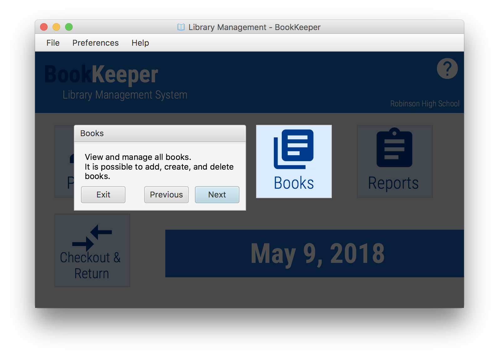

Viewing Interactive Help
- Opening the Spotlight Help Overlay
- In any view, select the circular help button in the top-right of the window (if available)
- The overlay will be opened
- Navigating the Spotlight Help Overlay
- Select Exit to exit the Spotlight Help Overlay item
- Select Next to advance to the next help item
- Select Previous to return to the previous help item
- (This option is not available on the first help item)
